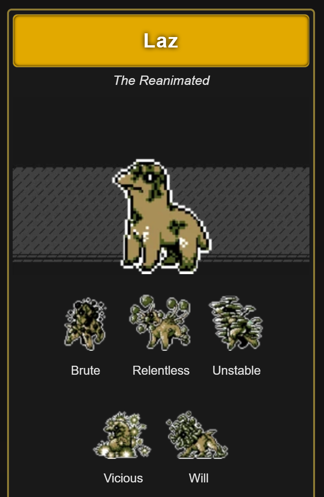

Gallery
Click or hover for details

Monster Crown is a PC monster-taming RPG that features a dark, mature story and true crossbreeds between all the monsters. Based mechanically and aesthetically on the monster-taming games of old--Robopon, Telefang, and, of course, Pokémon--this monster-tamer is the answer to decades worth of monster fans' passionate requests.
When you breed or fuse monsters in Monster Crown, the result is a true crossbreed from both parents. Your creations are truly independent, new species. Appearance, color, moves, typing, stats, and even the moves the monster is capable of learning are all inherited. After a few generations, it will be impossible to tell what monsters you even started with.
Once, Crown Island was ruled by the sadistic, monstrous Philosopher Kings. Though slain by a group of young men and women, 20 years later, a dangerous young woman named Beth threatens to revive the Kings and restore them to their thrones. Travel across Crown Island with your Monster companions to put an end to the dark, underground plot and prevent the return of tyranny. There comes a day in each hero's journey when they must choose who to side with. Will your decision make you a Savior? Or a dark Messiah? Only time will tell.
> Bugtested alpha builds of a Unity game.
> Located swathes of programming, grammatical, visual, and narrative errors.
> Utilized MantisBT software to log, tag, rate, and raise issues.
> Proposed bugfixes, spelling corrections, and alternate methods of achieving design goals.